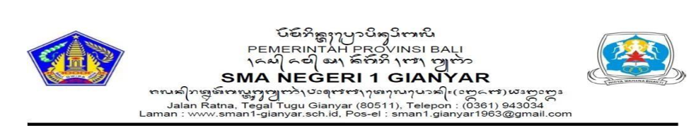

Nomor : ................................................................
Yang bertanda tangan di bawah ini:
dengan ini memberikan rekomendasi kepada:
untuk mengikuti Program Guru Inspiratif Astra Honda 2026 yang diselenggarakan oleh Yayasan Astra Honda Motor.
Kepala Sekolah menyatakan bahwa guru tersebut:
Uraian Singkat Rekomendasi Kepala Sekolah
(diisi 1–2 paragraf yang berisi prestasi/apresiasi/capaian/kontribusi yang guru terkait)
Berdasarkan pengamatan dan penilaian kami, Sdr. I Putu Darma Putra, S.Pd. merupakan pendidik berdedikasi tinggi yang secara mandiri merancang dan mengembangkan SIMAK DOSMAN (Sistem Informasi Manajemen Anak Kolektif Dosman) berbasis Web (Laravel Filament) dan Mobile (Flutter). Inovasi ini telah berhasil mentransformasi sistem presensi geolocation, efisiensi jadwal master Excel, serta administrasi bebas pustaka digital di SMAN 1 Gianyar secara signifikan.
Selain berprestasi di bidang inovasi teknologi pendidikan, yang bersangkutan juga aktif membimbing sesama guru dalam literasi digital dan senantiasa menjadi teladan kedisiplinan serta integritas bagi peserta didik maupun lingkungan sekolah.
Demikian surat rekomendasi ini dibuat dengan sebenarnya untuk digunakan sebagai persyaratan mengikuti Program Guru Inspiratif Astra Honda 2026.
Gianyar, 02 Oktober 2026
(tanda tangan & stempel)
I Wayan Sudra Astra, S.Pd., M.Pd.
Kepala Sekolah SMAN 1 Gianyar